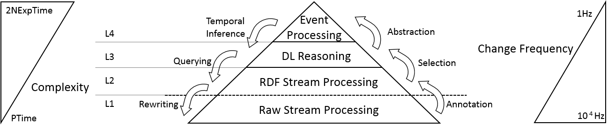

The Cascading Stream Reasoning Query Language
Introduction Cascading Reasoning:
Many relevant reasoning methods such as Description Logics are not able to deal with the high frequency of data streams. When the reasoning time is longer than the change frequency of the data (or the time for a window to slide) data will pile up and the system will eventually crash. The idea of cascading reasoning was introduced by Stuckenschmidt et al.[1] and proposes a hierarchy of processing steps with increasing complexity. The hierarchy presents a trade-off between expressivity of processing and change frequency of the data. This avoids feeding the high frequency data directly into the expressive reasoning engine.The various layers
{kind=link}
- L1: the annotation of raw streams to the RDF model.
- L2 :allows to select, using RSP engines, those parts of the stream that are relevant for further processing. For example, to select those updates from the traffic stream that model streets with an occupation >90 cars.
- L3: abstracts the selections of the previous layer using DLreasoning. In our example, different kinds of streets have different conditions for being considered as congested. This is typically modeled in the domain knowledge, as such reasoning is necessary. This layer also allows to abstract the selected events to high-level concepts, e.g. HighTrafficCongestion.
- L4: allows to perform event processing on the abstractions. This enables us to easily define temporal dependencies between high-level concepts, without needing to worry how the underlying events are modeled on a lower level.
The Cascading Stream Reasoning Query Language
CSQL unifies the various layers in the Cascading Reasoning approach:
PREFIX : <http://streamreasoning.org/iminds/massif/>
PREFIX ssniot: <http://IBCNServices.github.io/Accio-Ontology/SSNiot#>
PREFIX dul: <http://www.ontologydesignpatterns.org/ont/dul/DUL.owl#>
NAMED EVENT :FullParkingEvent AS
subClassOf (:hasContext some (iot:Parking and iot:hasCapacity some iot:FullParking))
NAMED EVENT :HighTrafficCongestionEvent AS
subClassOf (:hasContext some (iot:Road and iot:hasCongestionLevel some iot:HighCongestion))
NAMED EVENT :FullParkingCongestionEvent {
MATCH every :FullParkingEvent -> :HighTrafficCongestionEvent WITHIN (30m)
IF {
EVENT :FullParkingEvent { ?loc dul:hasDataValue ?value . }
EVENT :FullParkingCongestionEvent { ?loc1 dul:hasDataValue ?value .}
}
}
FROM NAMED WINDOW :prk [RANGE 1s, SLIDE 15ms] ON STREAM :ParkingStream
FROM NAMED WINDOW :trfc [RANGE 1s, SLIDE 15ms] ON STREAM :TrafficStream
WHERE {
WINDOW ?w {
?event ssniot:hasContext ?observation .
?observation ssn:observationResult ?result .
?result ssn:hasValue ?value.
?value dul:hasDataValue ?v.
FILTER(?v > 90)
}
}- Line 5 to 9: event definition based on the Machester syntax. This allows to concisely define high-level events.
- Line 11 to 12: definition of complex events using event processing operators. The operators can be defined over the event definitions.
- Line 13 to 16: restrictions for the pattern matching. Joining is performed by joining on the varable names with the same name, in this case `value'. (Filtering is supported as well.)
- Line 18 to 19 Window definition over various streams, based on RSP-QL.
- Line 20 to 28 Filtering of the low-level data stream to select only the parking and traffic observations with a value above 90 cars.